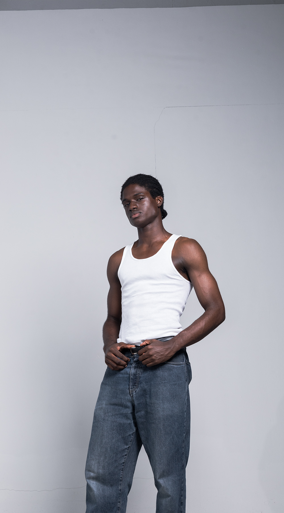
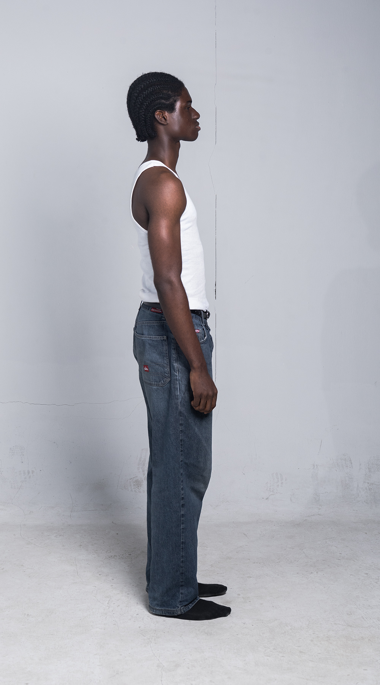

Portfolio ‘26
About
Gallery
Contact
Omalu.
(01)


Omalu, pronounced ‘ò.má.lù’, is an Igbo word that carries a sense of ease, goodness, and alignment with what feels right. It reflects a quiet confidence—the idea of moving through life with clarity, and a calm intention.
(A Performer in Truth)
Get in touch